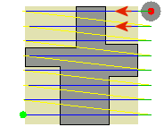

Bidirectionnel
L'option Direction permet de contrôler la méthode de coupe. Par défaut, elle est définie sur Bidirectionnel, et fait des allers-retours sur la face. Vous pouvez choisir d'usiner dans une direction en sélectionnant un fraisage de type Avalant ou Conventionnel.
|
Bidirectionnel |
 |
 |
Avalant |
Conventionnel |
Remarque: en fonction de la géométrie, il n'est pas toujours possible de maintenir un fraisage avalant ou conventionnel sur l'ensemble de la trajectoire d'outil.